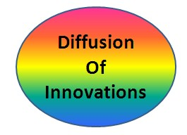

|  |
Diffusion of Innovations
|
Original ModelsThrough five editions of his book by that name, Rogers (1962, 1971, 1983, 1995, 2003) has promoted and traced a thread of research based on five fundamental factors he terms Perceived Characteristics of Innovations (PCIs), and which he posits are key to understanding adoption decisions. He describes them thus in the introduction to his book:
These five constructs were developed in studies of agricultural
innovations, but have had some difficulty being applied to
Information Technology. Numerous efforts have been made (Agarwal
& Prasad, 1997; Moore & Benbasat, 1991; Venkatesh et al.,
2003) to adjust the list of PCIs to give more predictive power to
the model. Rogers' theory is highly pervasive in the literature, and
few papers attempt to explain adoption or diffusion theory without
relating to DOI. Theory of Reasoned Action (TRA) and Theory of Planned Behavior (TPB) Icek Ajzen and colleagues have developed the TRA (which morphed into the TPB) over the years. This concept is a mathematical expression of long-standing approach of assigning values to various perceptions in an attempt to explain how people make decisions. As stated by Fishbein and Ajzen (1975, p. 29), the TRA states that: "... a person's attitude toward any object is a function of his beliefs about the object and the implicit evaluation responses associated with those beliefs. The central equation of the theory can be expressed as follows: TPB (Ajzen, 1985, 1991) extends the theory so that it "takes into account perceived as well as actual control over the behavior under consideration" (Ajzen, 1985). Connor and Armitage (1998), however, showed evidence that TPB was hardly definitive and needed additional constructs. Technology Acceptance Model (TAM) The Technology Acceptance Model (TAM) was proposed by Davis (1989) as having extreme simplicity, yet strong predictive power. Adams, Nelson, and Todd (1992) replicated the initial research, but concluded that it only explained about a third of the total variation. Perceived Ease of Use (PEOU) and Perceived Usefulness (PU) were found to predict Intention to Use (ITU). Various studies have shown different coefficients for PEOU and PU, and Venkatesh (2000) suggested determined that this may be due to a shift from PEOU in early days of a technology, to PU once it becomes routinized. Davis, Bogozzi, and Warshaw (1989) obtained similar results, showing PEOU dropping in its importance with experience. In a separate study Davis (1989), suggested that "perceived ease of use may be casual antecedent to perceived usefulness." In a replication, Hu et al. (1999) discovered that higher-level professionals are less likely to be affected by PEOU, suggesting that the shift from PEOU to PU may relate to self-efficacy which is likely to grow over a longer period of time in less-intelligent users. Numerous studies (Agarwal & Karahanna, 2000; Agarwal & Prasad, 2000; Dishaw & Strong, 1999; Mathieson, Peacock, & Chin, 2001; Moore & Benbasat, 1990; Rawstorne, Jayasuriya, & Caputi, 2000; Taylor & Todd, 1995b) have attempted to connect TAM to other theories in hopes of increasing explanatory power by various combinations, or contrast TAM with other theories (Davis, 1989). Gefen and Straub (1997) considered a different aspect: gender differences. They found that women differ from men in their expectations of new technology, but actual use is the same. Ginzberg (1981) discovered a link between realistic expectations and happiness with the application, suggesting that expectation management is a significant component of perceived system success. Oliver (1980) obtained similar results. Model of Personal Computer Utilization MPCU The Model of Personal Computer Utilization (MPCU) theory of Thompson, Higgins, and Howell (1991, 1994), based on a model proposed by Triandis (1980), considers factors which influence Intention to Use, thus indirectly influencing actual use. The factors in their first study (Thompson, Higgins, & Howell 1991) are: Social Norm, Affect, Complexity (considered an obstacle), Job Fit, Long-Term Consequences, and Facilitating Conditions. Their 1994 study (Thompson, Higgins, & Howell, 1994) added Experience to the model. Computer Self-Efficacy Model (CSE) Howard and Mendelow (1991) confirmed the intuitive connection between computer literacy and choice to use computers. Compeau and Higgens (1995a) refined this concept by researching the effect of peoples' perception of their ability to use computers and its effect on their actual success in using computers. In an extension of this research (Compeau, Higgens, & Huff, 1999), their hypothesis of a positive relationship was validated and extended to a wider group of subjects. A separate study by the same authors (Compeau & Higgens, 1995b) found that with further experience the effect of CSE on performance became less. Later studies have considered the effect of habit and affect (mood). Verplanken, Aarts, and Van Knippenberg (1996) showed habit to affect choices significantly, but Bamberg, Ajzen, and Schmidt (2003) discounted habit, while Limayem, Cheung, and Chan (2003) found it to be a moderator between other factors and ITU. Limayem and Hirt (2003) saw habit as a construct that increased TAM's explanatory power. Task-Technology Fit Model (TTF) TTF theory considers to study alignment between IT and needs (Goodhue & Thompson, 1995; Goodhue, 1995) This study was replicated and the model validated by Dishaw and Strong (1998) in a software maintenance environment. While Goodhue and Thompson (1995) did not show explanatory power in TTF, they suggested that, "A more compelling interpretation is that in this case the causal effect works in the other direction...For example, perhaps individuals who use the systems a great deal and are very dependent on them will be more frustrated by problems. ...the quality of the data, production timeliness, and relationship with IS all predicted higher perceived impact of information systems, beyond what could be predicted by utilization alone." Mark Dishaw and his colleagues have produced a series of articles relating TTF to other theories. Dishaw and Strong (1999) determined that a combined TAM/TTF model produces better predictions that TAM alone. Dishaw, Strong, and Bandy (2004) proposed testing a combination of TTF and the Unified Theory of Acceptance and Use of Technology (UTAUT). In the end, TAM may not be a viable alternative to DOI. Plouffe, Hulland, and Vandenbosch, (2001) compared TAM to DOI, concluding that DOI was had better parsimony and explained more variation in ITU. |